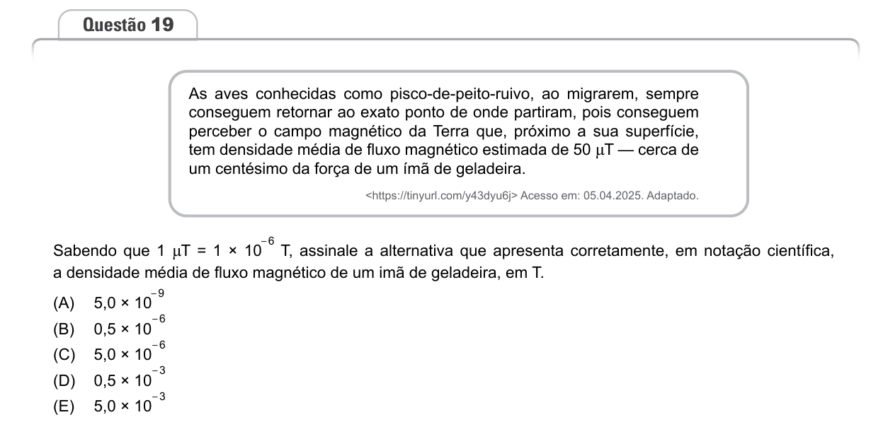

Selecione a letra correspondente às alternativas da imagem. Clique no enunciado para ampliar.
🔽 Ver gabarito comentado
Resposta: E
- 50 μT = 50 × 10⁻⁶ T.
- O ímã de geladeira é 100 vezes mais intenso no enunciado.
- 50 × 100 × 10⁻⁶ = 5.000 × 10⁻⁶ T.
- = 5,0 × 10⁻³ T.